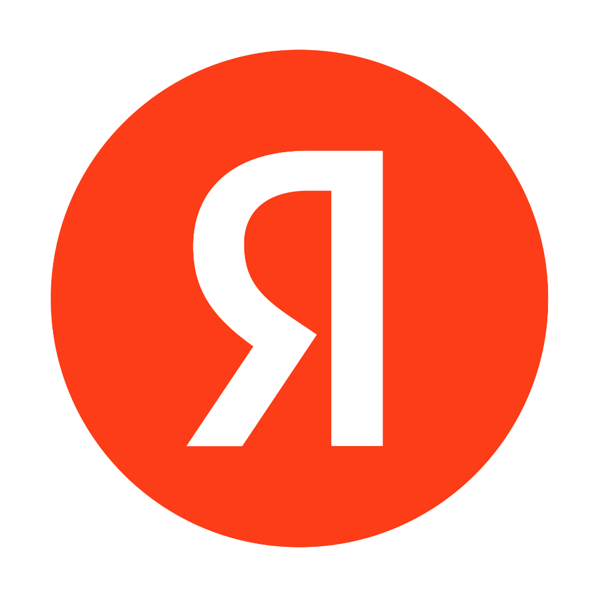

Ключевые направления юридической помощи
Профессиональные услуги юриста и адвоката в Липецке. Предоставляем комплексное правовое обслуживание для бизнеса и частных лиц: от первичной юридической консультации до представительства в суде.
Земельный юрист
Судебные споры по границам участков, сервитутам и кадастровой стоимости. Юридическая консультация и представительство интересов при конфликтах с госорганами.
Юрист по недвижимости
Сопровождение сделок купли-продажи, регистрация прав на объекты. Составление исков, споры с застройщиками по ДДУ и признание права собственности через суд.
Юрист по исполнительному производству
Взаимодействие со службой судебных приставов (ФССП). Снятие незаконных арестов, защита прав должника и контроль за исполнением судебных решений.
Адвокат по уголовным делам
Экстренная защита при задержании и доследственной проверке. Представительство на этапе следствия и защита интересов обвиняемого или потерпевшего в суде.
Военный юрист
Защита прав военнослужащих: оспаривание решений ВВК, помощь в получении положенных выплат. Представительство в суде по военным и уголовным делам.
Взыскание долгов
Досудебный возврат задолженности и взыскание долгов по распискам или договорам через суд. Полное ведение дела вплоть до фактического получения средств.
Наша команда
Опытные юристы и адвокаты Липецка с профильной специализацией. Бывшие сотрудники прокуратуры, Следственного комитета и службы судебных приставов, обеспечивающие надежную правовую защиту по гражданским, арбитражным и уголовным делам.
Начешников Владимир Викторович
Ведущий юрист
Специализация: корпоративное право и банкротство. Опыт работы более 20 лет в сферах налогового законодательства и комплексного сопровождения процедур банкротства физических и юридических лиц.
Смольянинова Марина Валерьевна
Ведущий юрист
Специализация: исполнительное производство, семейное и трудовое право. Опыт работы в УФССП России более 10 лет, из них более 6 лет на руководящих должностях.
Полозова Елена Анатольевна
Юрист
Специализация: военное и трудовое право. Юридический стаж более 8 лет. Представляет интересы доверителей в судах и государственных органах.
Иванушкова Надежда Сергеевна
Юрист
Специализация: семейное и трудовое право. Юридический стаж более 10 лет, включая работу юрисконсультом в банковской сфере.
Конопкин Дмитрий Сергеевич
Адвокат, партнер
Специализация: уголовное право. Юридический стаж с 2016 года. Значительный опыт работы в структуре Следственного комитета РФ. Статус адвоката с 2022 года.
Гусев Олег Юрьевич
Адвокат, партнер
Специализация: защита по уголовным делам. Юридический стаж с 1994 года. Более 20 лет работы в органах прокуратуры, в том числе на руководящих должностях. Статус адвоката с 2015 года.
Результаты нашей работы
Успешное разрешение спора о границах земельного участка
Проблема
Сосед незаконно захватил часть территории клиента. Досудебные переговоры по земельному спору не дали результата, потребовалось обращение к юристу.
Что сделали
Провели независимую землеустроительную экспертизу, составили и подали иск об устранении препятствий в пользовании участком в городской суд Липецка.
Ключевой результат
Границы восстановлены. Выиграно дело в суде первой инстанции, судебные издержки взысканы с ответчика.
Защита активов при сложном разделе имущества супругов
Проблема
Сложный раздел бизнеса и совместно нажитой недвижимости при разводе с конфликтующей стороной, зафиксированы попытки незаконного сокрытия активов.
Что сделали
Подали заявление на обеспечительный арест имущества. Юрист по семейным делам провел полный финансовый аудит предприятий для защиты доли клиента.
Ключевой результат
Достигнуто выгодное мировое соглашение в суде. Клиент полностью сохранил законный контроль над бизнесом.
Взыскание задолженности по договору подряда через суд
Проблема
Заказчик отказался оплачивать выполненные строительные работы по договору строительного подряда, ссылаясь на вымышленные недостатки.
Что сделали
Арбитражный юрист собрал документальную базу, подтверждающую приемку этапов, и инициировал судебную строительно-техническую экспертизу.
Ключевой результат
Основная задолженность и пени по договору взысканы на 100% через Арбитражный суд Липецкой области.
Отзывы и независимые оценки
Строго соблюдаем конфиденциальность, поэтому публикуем отзывы только с согласия доверителей.

Место для подтвержденного отзыва
Здесь появится реальный отзыв нашего доверителя после завершения дела.
Место для подтвержденного отзыва
Здесь появится реальный отзыв нашего доверителя после завершения дела.
Место для подтвержденного отзыва
Здесь появится реальный отзыв нашего доверителя после завершения дела.
Прозрачные цены на юридические услуги в Липецке
Сколько стоит нанять юриста или адвоката? Базовые тарифы представлены ниже. Итоговая цена на ведение судебного дела, представительство в суде или составление иска фиксируется в официальном договоре на оказание юридических услуг.
Гражданам
Защита личных интересов
- Юридическая консультация2 000 ₽
- Составление и подача искаот 10 000 ₽
- Ведение дела в суде Липецкаот 15 000 ₽
- Апелляционная жалобаот 20 000 ₽
- Ознакомление с материалами4 000 ₽/том
Бизнесу
Комплексное юридическое сопровождение
- Консультация для бизнеса5 000 ₽
- Разработка договоровот 10 000 ₽
- Досудебная претензионная работаот 15 000 ₽
- Представительство в Арбитражеот 15 000 ₽
- Правовой аудит документовот 10 000 ₽
Документы и консалтинг
Глубокая правовая аналитика
- Письменная правовая оценкаот 30 000 ₽
- Официальное заключение юристаот 35 000 ₽
- Участие в деловых переговорах15 000 ₽
- Защита интересов в госорганах15 000 ₽
- Разработка внутренних регламентовот 15 000 ₽
Ответы на важные вопросы
Мы собрали самые частые вопросы наших доверителей. Если вы не нашли ответ на свой вопрос — свяжитесь с нами для индивидуальной консультации.
Задать свой вопросОбсудите ситуацию с юристом
Кратко опишите ситуацию. Юрист уточнит обстоятельства и сообщит, какие документы потребуются для дальнейшего разбора.
Оставить заявку
Перезвоним вам в течение 15 минут
в рабочее время.